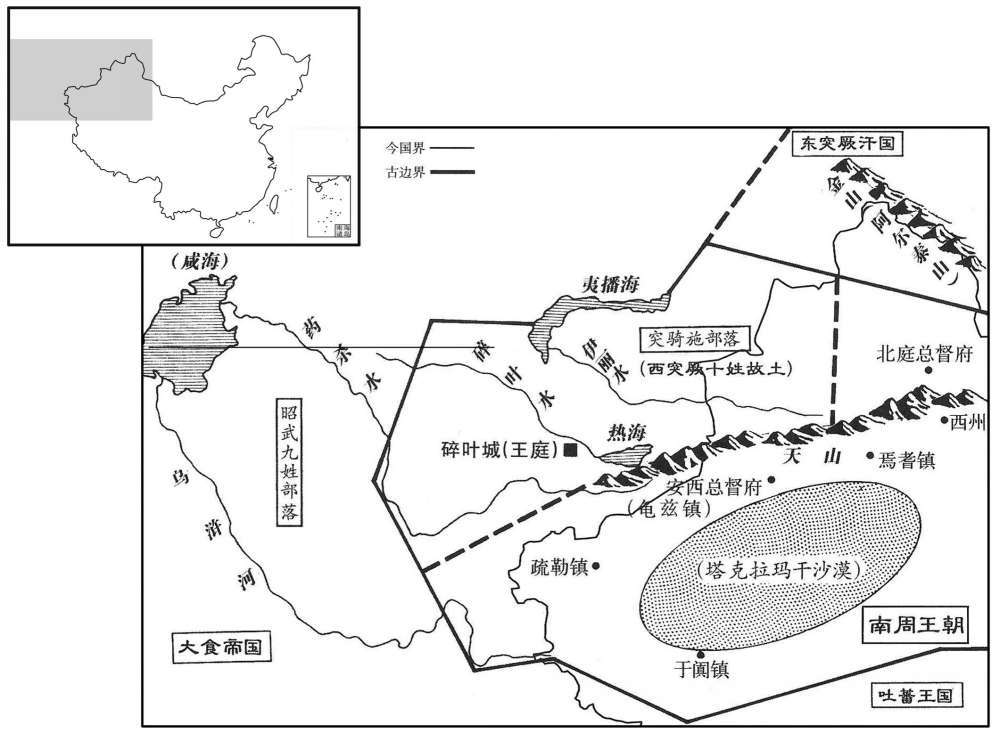

公元703年资治通鉴：本年记事、原文与白话对照
按原书编年位置阅读；追叙和史论不等于本年发生的事件。白话采用所据译本，缺译不以生成译文补齐。
卷207 · 本年记事
公元703年 · 唐则天顺圣皇后长安三年
三年〔（癸卯、七〇三）〕
本年事件索引（现代整理）
- 日食
- 吐蕃献马、黄金求亲
- 韦安石留守神都
- 文昌台改称中台，李峤知纳言事
- 新罗王金理洪去世，弟弟金崇基继位
- 默啜遣使请求让女儿嫁给皇太子之子
- 宁州洪水淹死二千余人
- 朱敬则同任平章事
- 相王李旦任雍州牧
- 唐休璟任平章事，准确预判安西军情
- 乌质勒击败斛瑟罗并控制碎叶
- 日全食
- 魏元忠多次顶撞张易之兄弟，遭其怨恨
- 张昌宗诬告魏元忠与高戬谋议废太后立太子
- 张柬之等劝张说勿作伪证陷害魏元忠
- 张说当廷揭穿张昌宗逼其作伪证
- 朱敬则、苏安恒上疏为魏元忠申辩
- 魏元忠被贬高要县尉，预言张易之兄弟将成祸乱
- 王晙冒险为魏元忠申辩
- 马怀素查明崔贞慎等人只是为魏元忠送行
- 桓彦范不屈从张易之兄弟，武则天暗中保护他
- 武攸宜留守西京
- 武则天从长安返回神都
- 默啜遣使谢允婚，崔神庆请求太子召见须用玉契
- 裴怀古轻骑招抚欧阳倩，岭南叛乱平定
- 朝廷派使者巡察州县政务
- 吐蕃南境诸部叛乱，赞普器弩悉弄死于军中

本年形势与背景参考图
春，三月，壬戌朔，日有食之。
春季，三月，壬戌朔（初一），出现日食。
夏，四月，吐蕃遗使献马千匹、金二千两以求婚。〔使，疏吏翻；下同。〕
夏季，四月，吐蕃派遣使者前来进献马一千匹、黄金二千两，目的是为了向大唐求婚。
开月，丁丑，命韦安石留守神都。
闰月，丁丑（十七日），武则天命令韦安石留守神都。
己卯，改文昌台为中台。〔光宅元年，改尚书省为犬昌台。〕以中台左丞李峤知纳言事。
己卯（十九日），武则天将文昌台改名为中台，任命中台左丞李峤掌管纳言事务。
新罗王金理洪卒，〔卒，子恤翻。〕遗使立其弟崇基为王。
新罗王金理洪去世，武则天派遣使者前去立他的弟弟金崇基为王。
六月，辛酉，突厥默啜遗其臣莫加干来，请以女妻皇太子之子。〔妻，七细翻。〕
六月，辛酉（初一），突厥阿史那默啜派大臣莫贺干前来，请求把他的女儿嫁给皇太子的儿子。
宁州大水，溺杀二千余人。〔溺，奴狄翻。〕
宁州发大水，淹死二千多人。
秋，七月，癸卯，以正谏大夫朱敬则同平章事。〔考异曰：新纪云「壬寅」；唐历云「十四日癸卯」，今从之。〕
秋季，七月，癸卯（十四日），武则天任命正谏大夫朱敬则为同平章事。
戊申，以相〔【章：十二行李「相」上有「并州牧」三字；乙十一行本同；孔本同。】〕王旦为雍州牧。〔相悉亮翻。雍，于用翻。考异曰：唐历「十八日丁未」，今从实录。〕
戊申（十九日），武则天任命相王李旦为雍州牧。
庚戌，以夏官尚书、检校凉州都督唐休璟同凤阁鸾台三品。时突骑施酋长乌质勒与西突厥诸部相攻，〔骑，奇奇翻。酋，慈由翻。长，知两翻。考异曰：武平一景龙文馆记作「乌折勒」，今从新、旧书。〕安西道绝。太后命休璟与诸宰相议其事，顷之，奏上，〔上，时掌翻。〕太后即依其议施行。后十余日，安西诸州请兵应接，程期一如休璟所画，太后谓休璟曰：「恨用卿晚。」谓诸宰相曰：「休璟练习边事，卿曹十不当一。」
庚戌（二十一日），武则天任命夏官尚书、检校凉州都督唐休为同凤阁鸾台三品。当时由于突骑施酋长乌质勒与西突厥各部落互相攻伐，通安西的道路断绝。武则天命令唐休与各位宰相商议解决办法。不一会儿，商议好的办法就呈报了上来，武则天就依照他们的意见施行。十几天后，安西都护府所辖各州请求派兵接应，具体的时间与唐休所预想的完全相符。武则天对唐休说：“朕实在遗憾用你用得太晚了。”并且对各位宰相说：“唐休极为熟悉边境事务，你们十个人也抵不上他一个人。”
时西突厥可汗斛瑟罗用刑残酷，诸部不服。乌质勒本隶斛瑟罗，号莫贺达干，能抚其众诸部归之，斛瑟罗不能制。乌质勒置都督二十员，各将兵七千人，屯碎叶西北；〔将，即亮翻。〕后攻陷碎叶，徙其牙帐居之。斛瑟罗部众离，散，因入朝，不敢复还，〔天授元年书斛瑟罗入居内地，神功元年书来俊臣诬陷斛瑟罗，则其入朝必不在是年，此因书乌质勒事叙其得国之由，遂及斛瑟罗失国事耳。朝，宜遥翻。〕乌质勒悉并其地。
起初西突厥可汗斛瑟罗所实行的刑罚十分残酷，他统辖的各个部落都不服从他。乌质勒本来是斛瑟罗的下属，号莫贺达干，因为他善于安抚部下，各个部落便纷纷归附他，斛瑟罗无力制止。乌质勒共任命了二十名都督，让他们每个人统率七千人，驻扎在碎叶城的西北，后来攻陷碎叶城，将自己的衙帐迁到那里。斛瑟罗手下的人马都已四分五裂，于是入朝，不敢再回到西北边境去。乌质勒于是全部吞并了斛瑟罗原有的领地。
九月，庚寅朔，日有食之，既。
九月，庚寅朔（疑误），出现日食，是日全食。
初左台大失、同凤阁鸾台三品魏元忠为洛州长史，洛阳令张昌仪恃诸兄之势，每牙，直上长史听事；〔凡牙参者，立于庭下。上，时掌翻。听，读曰厅。〕元忠到官，叱下之。〔下，遐稼翻。〕张易之奴暴乱都市，元忠杖杀之。及为相，太后召易之弟岐州刺史昌期，欲以为雍州长史，对仗，问宰相曰：「谁堪雍州者﹖」元忠对曰：「今之朝臣无以易薛季昶」〔雍，于用翻。朝，宜遥翻。〕太后曰：「季昶久任京府，朕欲别除一官；昌期何如﹖诸相皆曰：「陛下得人矣。」元忠独曰：「昌期不堪！」太后问其故，元忠曰：「昌期少年，不闲吏事，〔少，诗照翻。〕向在岐州，户口逃亡且尽。雍州帝京，事任繁，剧，不若季昶强干习事。」太后默然而止。元忠又尝面奏：「臣自先帝以来，蒙被恩渥，今承乏宰相，〔元忠自言朝廷乏人，己得承之备位宰相。被，皮义翻。〕不能尽忠死节，使小人在侧，臣之罪也！」〔小人在侧，斥张易之兄弟。〕太后不悦。由是诸张深怨之。
当初，左台大夫、同凤阁鸾台三品魏元忠曾担任洛州长史职务。在魏元忠到任以前，洛阳令张昌仪倚仗几个兄长的权势，每次到洛州长史衙门参拜，都不按规定在庭下站立，而径直走上长史办公的大厅；魏元忠到任后，叱令他下去。张易之的家奴在神都的街市上横行不法，魏元忠下令将其用杖刑处死。在魏元忠入朝作宰相以后，武则天征召张易之的弟弟岐州刺史张昌期入朝，想要任命他为雍州长史。百官上朝奏事时，武则天向诸位宰相问道：“谁可以胜任雍州长史的职务？”魏元忠说：“现在众多的朝臣之中，没有哪一位比薛季昶更合适的了。”武则天说：“薛季昶长期以来一直在京府任职，朕打算另外任命他一个职务。你们认为张昌期这个人怎么样？”宰相们纷纷回答说：“陛下可算是真正找到了合适的人选了。”唯独魏元忠提出反对意见：“张昌期无法胜任这一职务！”武则天询问原因，魏元忠回答说：“张昌期还很年轻，不熟悉治理之道。以前他在岐州任官时，岐州户口逃亡严重，所剩无几。雍州地处京城，事情多、担子重，张昌期自然不如薛季昶精明强干、熟悉事务。”武则天没有再说什么。魏元忠还曾当面向武则天进言道：“从先帝在位直到现在，臣蒙受朝廷大恩，如今臣得忝列宰相之位，不能为国家竭忠效死，致使小人得以在陛下左右掌权，这是臣的罪过呀！”武则天听后很不高兴。张易之兄弟也因此而十分痛恨魏元忠。
司礼丞高戬，太平公主之所爱也。〔司礼丞，即太常丞。戬，即浅翻。〕会太后不豫，张昌宗恐太后」日晏驾，为元忠所诛，乃谮元中与戬私议云：「太后老矣，不若挟太子为久长。」〔言为久长之计。〕太后怒，下元忠、戬狱，〔下，遐稼翻。〕将使与昌宗廷辨之。昌宗密引凤阁舍人张说，赂以美官，使证元忠；说许之。〔说，读曰悦。〕明日，太后召太子、相王及诸宰相，使元忠与昌宗参对，往复于决。昌宗曰；「张说闻元忠言，请召问之。」
司礼丞高戬，是太平公主所宠爱的人。恰好武则天生病，张昌宗害怕一旦武则天去世，自己会被魏元忠杀掉，于是诬陷魏元忠曾和高戬私下商议说：“太后年岁太大了，我们不如倚仗太子，这样才是长久之计。”武则天十分生气，下令将魏元忠和高戬逮捕入狱，并准备让他们两人与张昌宗在朝廷上当场对质。张昌宗暗地里找来凤阁舍人张说，用高官厚禄收买他，要他出面证明魏元忠确实说过上面的话，张说答应为他作这样的证明。第二天，武则天召来太子李显、相王李旦以及诸位宰相，让魏元忠与张昌宗当着大家的面互相对质，双方各不相让，因而无法作出决断。张昌宗说：“张说听到魏元忠说的话，请陛下召见张说询问。”
太后召说。说将入，凤阁舍人南和未璟〔南和县，汉属广平国。未白曰：水经云，北有和成县，故此县云南。后周置南和郡，隋废郡为县，唐属邢州。璟，固永翻。〕谓说曰：「名义至重，鬼神难欺，不可党邪陷正以求苟免！若获罪流窜，其荣多矣。若事有不测，璟当叩合力争，〔言叩合门而力争也。程大昌曰：凡内殿、便殿皆可谓之合。〕与子同死。努力为之，万代瞻仰，在此举也！」殿中侍御史济源张廷珪曰：「朝闻道，夕死可矣！」〔论语载孔子之言。济，子礼翻。〕佑史刘知几曰：「无污青史，为子孙累！」〔几，居希翻。污，乌故翻。累，力瑞翻。〕
武则天召见张说。在张说即将进入朝堂的时候，凤阁舍人南和县人宋对他说：“名誉和道义对一个人来说最为重要，任何人都难以欺骗鬼神，切不可偏袒邪恶之徒陷害忠良方正之士，用不正当的手段求免于难！如果因此获罪遭受流放，那么值得荣耀的地方就太多了。倘若有意外的灾祸，我将上殿力争，与您一同为忠义而死。努力去做吧，能否万古流芳，就在此一举了。”殿中侍御史济源人张廷对他说：“孔子说过：‘早上得知真理，要我当晚死去都行。’”左史刘知几也对他说：“不要使您自己的行为玷污了青史，成为子孙后代的耻辱！”
及入，太后问之，说未对。元忠惧，谓说曰：「张说欲与昌宗共罗织魏元忠邪！」说叱之曰：「元忠为宰相，何乃效委巷小人之言！」昌宗从旁迫趣说，使速言。〔趣，读曰促。〕说曰：「陛下视之，在陛下前，犹逼臣如是，况在外乎！臣今对广朝，不敢不以实对。〔朝，宜遥翻。〕臣实不闻元忠有是言，但昌宗逼臣使诬证之耳！」易之、昌宗遽呼曰：〔呼，火故翻。〕「张说与魏元忠同各！」太后问其状。对曰：「说尝谓元忠为伊、周；伊尹放太甲，周公摄王位，非欲反而何﹖」说曰：「易之兄弟小人，徒闻伊、周之语，安知伊、周之道！日者元忠初衣紫，〔衣，于既翻。太宗贞观四年，诏三品以上服紫。〕臣以郎官往贺，元忠语客曰：『无功受宠，不胜凓惧。』〔语，牛倨翻。胜，音升。〕臣实言曰：『明公居伊、周之任，何愧三品！』彼伊尹、周公皆为臣至忠，古今蓦仰。陛下用宰相，不使学伊、周，当使学谁邪﹖且臣岂不佑今日附昌宗立取台衡，〔三台为泰阶，北斗杓三星为玉衡。宰辅得人，则玉衡正而泰阶平，故谓宰辅为台衡。〕附元忠立致族灭！但臣畏元忠冤魂，不敢诬之耳。」太后曰：「张说反复小人，宜并系治之。」〔治，宜之翻。他日，更引问说，对如前。太后怒，命宰相与河内王武懿宗共鞫之，说所执如初。〕
张说进入朝堂，武则天问他，他没有马上回答。魏元忠害怕了，对张说说：“你也要与张昌宗一起罗织罪名陷害我魏元忠吗！”张说大声呵斥他说：“你魏元忠身为宰相，为什么竟说出了这种陋巷小人的语言呢！”张昌宗在一旁急忙催促张说，让他赶快作证。张说说：“陛下都看到了，张昌宗在陛下眼前，尚且这样威逼臣，何况在朝外呢！臣现在当着诸位朝臣的面，不敢不把真实情况告诉陛下。臣实在是没有听到过魏元忠说这样的话，只是张昌宗威逼我，让我为他作虚假的证词罢了！”张易之和张昌宗急忙大声说：“张说与魏元忠是共同谋反！”武则天追问详情，张易之和张昌宗回答说：“张说曾经说魏元忠是当今的伊尹和周公。伊尹流放了太甲，周公作了周朝的摄政王，这不是想谋反又是什么？”张说说：“张易之兄弟是孤陋寡闻的小人，只是听说过有关伊尹、周公的只言片语，又哪里懂得伊尹、周公的德行！那时魏元忠刚刚穿上紫色朝服，作了宰相，我以郎官的身份前往祝贺，元忠对前去祝贺的客人说：‘无功受宠，不胜惭愧，不胜惶恐。’我确实是对他说过：‘您承担伊尹、周公的职责，拿三品的俸禄，有什么可惭愧的呢！’那伊尹和周公都是作臣子的人中最为忠诚的，从古到今一直受到人们的仰慕。陛下任用宰相，不让他们效法伊尹和周公，那要让他们效法谁呢？况且今天我又哪 能不明白依附张昌宗就能立刻获取宰相高位、靠近魏元忠就会马上被满门抄斩的道理呢？只是我害怕日后魏元忠的冤魂向我索命，因而不敢诬陷他罢了。”武则天说：“张说是个反覆无常的小人，应当与魏元忠一同下狱治罪。”后来，武则天又一次召见张说追问这事，张说的回答仍然与上一次一样。武则天大怒，指派宰相与河内王武懿宗一同审讯他，张说的说法仍然与最初一样。
朱敬则抗疏理之曰：「元忠素称忠正，张说所坐无名，若令抵罪，失天下望。」苏安恒亦上疏，〔恒，户登翻。上，时掌翻。疏，所去翻。〕以为：「陛下革命之初，人以为纳谏之主；暮年以来，人以为受佞之主。自元忠下狱，里巷恟恟。〔下遐稼翻。恟，许勇翻。〕皆以为陛下委信奸宄，斥逐贤良，忠臣烈士，皆抚髀于私室而箝口于公朝，畏易之等意，〔箝，其廉翻。朝，宜遥翻。迕，五故翻。〕徒取死而无益。方今赋役烦重，百姓凋弊，重以谗慝专恣，刑赏失中，〔重以，宜用翻。〕窃恐人心不安，别生他变，争锋于朱雀门内，问鼎于大明殿前，〔朱雀门，谓宫城南门。大明殿，即含元殿。〕陛下将何以谢之，何以御之﹖」易之等见其疏，太怒，欲杀之，赖朱敬则及凤阁舍人桓彦范、著作郎陆泽魏知古保救得免。〔先天元年，方复置深州，又分饶阳、鹿城于古郻城置陆泽县。史因魏知古贵显于开元之时，遂以后来士断书之。郻，苦么翻。考异曰：旧传云：「易之欲遗刺客杀之。」若遗刺客，必不遗人知，敬则等安能保护！盖欲白太后杀之耳〕
朱敬则上疏直言申辩说：“魏元忠一向以忠诚正直著称于世，张说入狱又没有任何正当理由，如果将他们治罪，会失掉天下民心。”苏安恒也为此上疏，认为：“陛下登基之初，臣民们都认为您是善于纳谏的皇帝，年纪大了以后，都认为您是喜欢阿谀奉承的皇帝。自从魏元忠下狱，大街小巷纷扰不安，士民们都认为陛下信用为非作歹之徒，贬逐贤良方正之士。那些忠臣志士，都在自己家中拍着大腿唉声叹气，而在朝堂之上却缄口不言，害怕万一违犯了张易之等人的意图，会白白送死而毫无益处。现在朝廷征发的赋税劳役都很烦重，百姓生计日益残破，再加上邪恶之徒专擅放纵，刑罚与赏赐失当，我真担心民心不稳，引发其他的变故，以敌朱雀门内动起刀兵，有人前来大明殿夺取帝位，陛下将用什么来解释，又将靠什么来抵御他们？”张易之等人见到他的奏疏之后，勃然大怒，想要杀死他，幸亏有朱敬则和凤阁舍人桓彦范、著作郎陆泽县人魏知古的多方保护才得以幸免。
丁酉，贬魏元忠为高要尉；〔高要县，汉属苍梧郡，宋、齐属南海郡，陈置高要郡，隋带端州。〕戬、说皆流岭表。元忠辞日，这于太后曰：「臣老矣，今向岭南，十死一生。陛下他日心有思臣之时。」太后问其故，时易之、昌宗皆侍侧，元忠指之曰：「此二小儿，终为乱阶。」易之等下殿，叩膺自掷称冤。太后曰：「元忠去矣！」
丁酉（初九），武则天将魏元忠贬职为高要县尉，将高戬和张说二人流放到岭南。魏元忠辞行的时候，对武则天说：“臣年纪大了，这次前去岭南，多半会死在那里，日后陛下一定会有想起我的时候。”武则天询问他这样讲的原因，当时张易之、张昌宗都在武则天身旁侍奉，魏元忠用手指着他俩回答说：“这两个小儿，最终将成为祸乱的根由。”张易之等人赶忙走下殿堂，呼天抢地、捶胸顿足地声称魏元忠冤枉了他们。武则天叹道：“魏元忠去吧！”
殿中侍御史景城王晙〔景城县，汉属勃海郡，后魏并入城不县，隋开皇十八年改曰景城，属沧州。晙，私润翻，又音俊。〕复奏申理元忠，〔复，扶又翻；下子复同。〕未璟谓之曰：「魏公幸已得全，今子复冒威怒，得无狼狈乎！」晙曰：「魏公以忠获罪，晙为义所激，颠沛无恨。」璟叹曰：「璟不能申魏公之枉，深负朝廷矣。」
殿中侍御史景城县人王又上奏为魏元忠申辩，宋对他说：“魏公已侥幸免死，现在您又来惹天子发怒，能不倒霉吗！”王说：“魏公忠正无二却受到处罚，我激于正义才这样做，即使因此而颠沛流离，也不感到遗憾。”宋慨叹道：“宋不能辨明魏公所受的冤屈，深深辜负朝廷重托。”
太子仆崔贞慎等八人饯元忠于郊外〔，唐制，太子仆从四品下，掌太子车舆、乘骑、仪仗之政令。〕易之诈为告密人柴明状，称贞慎等与元忠谋反。太后使监察御史丹徒马怀素鞫之，〔丹徒，春秋时吴之朱方也，汉为丹徒，县，属会稽郡；吴为京口戌，晋以下为南徐州；隋为延陆县，属江都郡；唐为丹徒县，带润州。监，古衔翻。〕谓怀素曰：「兹事皆实，略问，速以闻。「顷之，中使督趣者数四，〔使疏吏翻。趣，读日促。〕曰：「反状昭然，何稽留如此﹖」怀素请迤明对质，太后曰：「我自不知柴明处，但据状鞫之，安用告者﹖」怀素据实以闻，太后怒曰：「卿欲纵反者邪﹖」对曰：「臣不敢纵反者！元忠以宰相谪官贞慎等以亲故追送，若诬以为反，臣实不敢。昔栾布奏事彭越头下，汉祖不以为罪，〔栾布事见十二卷汉高帝十一年。〕况元忠之刑未如彭越，而陛下欲诛其送者乎！且陛下操生杀之柄，〔操，千高翻。〕欲加之罪，取决圣衷可矣；若命臣推鞫，臣不敢不以实闻。」太后曰：「汝欲全不罪邪﹖」对曰：「臣智识愚浅，实不见其罪。」太后意解。贞慎等由是获免。
太子仆崔贞慎等八人在郊外为魏元忠饯行，张易之冒充告密人柴明呈上一份状纸，告崔贞慎等人与魏元忠一起谋反。武则天派监察御史丹徒县人马怀素负责审理这个案子，并对他说：“状子上指控的事全都是属实的，你大略地审问一下，就赶紧把处理意见报上来。”时间不长，奉命前来催办此案的宦官就有好几批，并且对他说：“魏元忠与崔贞慎等人谋反的情节非常清楚，你为什么还要这样拖延不决？”马怀素请求让柴明与崔贞慎等人当面对质，武则天说：“我也不知道柴明在哪里，你只须按照状子上告发的事实审问，还要找那个告状的人干什么？”马怀素根据实际情况上报，武则天勃然大怒地问他：“你想放纵谋反的人吗？”马怀素回答说：“臣不敢放纵谋反的罪犯！但魏元忠以宰相的身分遭贬，崔贞慎等人因亲朋故旧的关系为他饯行，如果诬陷他们在共同谋反，臣实在不敢。从前梁王彭越谋反，头被砍下示众，梁大夫栾布出使回来，对着他的头奏事，汉高祖也没有认为栾布有罪，何况今天魏元忠所受的处罚远远不及彭越，难道陛下反而杀掉为他饯行的人吗！再说陛下掌握着生杀大权，如果要加罪于这些人，您自己决断也就行了。既然陛下派臣负责审理此案，我就不敢不根据实情上报了。”武则天问：“这么说对这些人你是打算一个也不治罪了？”马怀素回答说：“臣才智低下，见识浅陋，实在没发现他们有什么罪过。”武则天这才打消了原来的想法。崔贞慎等人也因此而得以幸免。
太后尝命朝贵宴集，〔朝直遥翻。〕易之兄弟皆位在未璟上。易之素惮璟，欲悦其意，虚位揖之曰：「公方今第一人，何乃下坐﹖」璟曰：「才劣位卑，张卿以为第一，何也﹖」天官侍郎郑杲谓璟曰：「中丞杯奈何卿五郎﹖」〔考异曰：新旧传皆作「郑善果」。按善果乃是高祖时人，新、旧传皆误，当从御史台记。〕举坐悚惕。〔坐，徂卧翻。〕时自武三思以下，皆谨事易之兄弟，璟独不为之礼。诸张积怒，常欲中伤之；〔中，竹仲翻。〕太后知之，故得免。
两版字句有差异，建议核对原文。
武则天曾宴请朝中权贵。张易之兄弟的官职都在宋之上，但张易之素来惧怕宋，为了取悦宋，于是空出上位来请宋坐，说道：“您是当今第一人，为什么在下位落坐呀？”宋说：“本人才智低劣，职务卑微，张卿反说我是当今第一人，这是什么道理？”天官侍郎郑杲对宋说：“中丞为什么称五郎为张卿呢？”宋说：“根据他的官职，称他为张卿最为合适。您本人并不是张卿的家奴，为什么要称他为郎呢？”所有在座的人听到这话都为他提心吊胆。当时朝中大臣自武三思以下，都谨慎地奉承张易之兄弟，惟独宋对他们不给予礼遇。张易之兄弟怀恨已久，常常想恶意诬陷宋。武则天清楚这一点，宋才因此而得以幸免。
丁未，以左武卫大将军武攸宜充西京留守。〔守，式又翻。〕
丁未（十九日），武则天派左武卫大将军武攸宜充任西京留守。
冬，十月，丙寅，车驾发西京；乙酉，至神都。
冬季，十月，丙寅（初八），武则天从西京出发；乙酉（二十七日），抵达神都。
十一月，〔【章：十三行本「月」下有「己丑」二字；乙十一行本同；孔本同；张校同；退齐校同。】〕突厥遗使谢许婚。〔使，疏吏翻。〕丙寅，〔【章：十三行本「寅」作「申」；孔本同；张校同。】〕宴于宿羽台，〔宿羽台在东都宿羽官中，高宗调露元年所起。〕太子预焉。宫尹崔神庆上疏；〔上，时翻。疏，所去翻。〕以为：「今五品以上所以佩龟者，为别敕征召，恐有诈妄，内出龟合，然后应命。况太子国本，古来征召皆用玉契。〔唐制，百官有随身鱼符，以明贵贱，应召命，左二，右一；左者进内，右者随身。皇太子以玉契召，勘合乃赴；亲王以金，庶官以，皆题某位姓名，成册盛以鱼袋。天授二年改佩鱼为龟。张鷟朝野佥载曰：唐以鲤鱼符，遂为鱼符。至伪周，武姓也，玄武，龟也，因改鱼符为龟。符为，于伪翻。〕此诚重慎之极也。昨缘突厥使见，太子应预朝参，〔使，疏吏翻。见，贤遍翻。朝，宜遥翻；下同。〕直有文符下宫，曾不降敕处分，〔下，遐稼翻。处，昌吕翻。分扶问翻。〕臣愚谓太子非朔望朝参、应别召者，望降墨敕及玉契。」太后甚然之。
十一月，突厥阿史那默啜派遣使者前来感谢朝廷充许通婚。丙寅（疑误），武则天在宿羽台设宴款待突厥使者，太子李显也参加了宴会。宫尹崔神庆上疏认为：“当今五品以上官员之所以随身佩戴龟符，是因为天子如有特别命令征召入宫，担心有人欺诈，冒充被召之人，所以必须宫中拿出的龟符与官员随身佩戴的龟符两相吻合，然后被召之人才可以应命入宫。何况太子是立国的根本，自古以来征召太子入宫都用玉契，这实在是达到郑重谨慎的极点了。昨天由于突厥使者前来朝见，太子应该一同入朝参见陛下，当时只有文书下达宫中，而没有另外由陛下降敕征召。依臣愚见，太子如不是在初一、十五入朝参见，而是接受特别征召前来，那么就希望陛下向太子颁发玉契以及由陛下亲自书写墨敕。”武则天认为他的建议十分正确。
始安獠欧阳倩〔始安，郡桂州。范成大桂海虞衡志曰：獠依山林而居，无酋长版籍，蛮之荒忽无常者也。以射生食动为活，虫豸能蠕动者皆取食。獠鲁皓翻。〕拥众数万，攻陷州县，朝廷思得良吏以镇之。朱敬则称司封郎中裴怀古有文武才，〔唐司封郎掌国之封爵，属吏部。〕制以怀古为桂州都督，仍充招慰讨击使。〔使，疏吏翻。〕怀古纔及岭上，飞书示以祸福，倩等仰降，〔降，户江翻。〕且言「为吏所侵逼，故举兵自救耳。」怀古轻骑赴之。〔骑，奇寄翻。〕左右曰：「夷獠无信，不可忽也。」怀古曰：「吾使仗忠信，可通神明，而况人！」乎遂诣其营，贼众大喜，悉归所掠货财；诸洞酋长素持两端者，皆来款附，〔酋，慈由翻。长，知两翻。〕岭外悉定。
居住在桂州始安郡的仡佬族人欧阳倩，拥有数万人马，攻陷了当地的州县，朝廷希望能选派一位精明强干的官员前往镇守弹压。朱敬则认为司封郎中裴怀古具备文武全才，武则天于是任命裴怀古为桂州都督兼招慰讨击使。裴怀古才到五岭，就立即飞递书信给欧阳倩晓以利害祸福，欧阳倩等派人迎降，并且说：“由于受官吏欺凌威逼，我们才兴兵自救。”裴怀古想自己轻装骑马前往抚慰，身边的下属对他说：“夷獠之徒不讲信用，您不能麻痹大意。”裴怀古回答说：“我所依赖的是忠信二字，仅凭这一点即可与神明相通，何况欧阳倩这些人呢！”于是到达了欧阳倩的营地。这些仡佬人十分高兴，便全部归还了他们抢劫的财物；平时一向对朝廷首鼠两端的各洞酋长，也纷纷前来诚心归附。岭外之地于是全部平定。
是岁，分命使者以六条察州县。〔使，疏吏翻。〕
在这一年，武则天分别命令使者根据六条标准到各地考察州县官吏的政绩。
吐蕃南境诸部皆叛，赞普器弩悉弄自将击之，卒于军中。〔将，即亮翻。卒，子恤翻。〕诸子争立，久之，国人立其子弃隶蹜赞为赞普，生七年矣。〔史言诸论既死，吐蕃国势稍衰。〕
吐蕃南部边境各部落都发生了叛乱，赞普器弩悉弄亲自率军前往平叛，死于军中，他的儿子们争着要继位，过了很久之后，国人才立他年仅七岁的儿子弃隶赞为赞普。